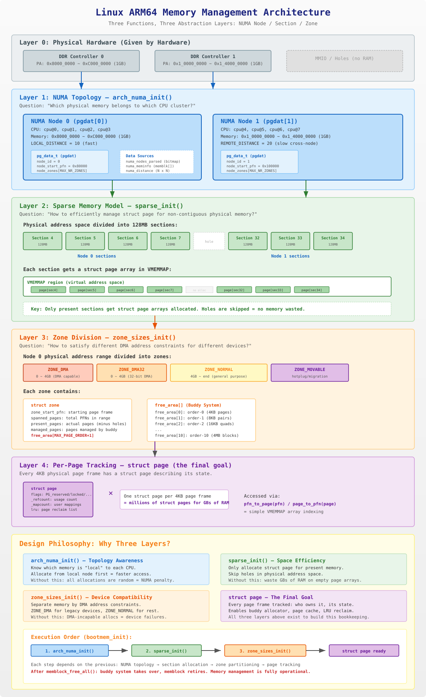

Linux ARM64 内存管理架构：三个函数，三层抽象
概述
在 bootmem_init() 中，三个函数按顺序执行，共同构建了 Linux 内核的物理内存管理体系：
// arch/arm64/mm/init.c: bootmem_init()
arch_numa_init(); // 第1步：确定 NUMA 拓扑 —— "内存属于谁"
sparse_init(); // 第2步：建立稀疏内存模型 —— "如何跟踪每一页"
zone_sizes_init(); // 第3步：划分内存区域 —— "不同用途的内存如何分类"这三个函数的本质是：用三种不同维度的数据结构，对同一块物理内存进行层层抽象管理。

1. arch_numa_init() — 拓扑感知：谁的内存离谁近？
1.1 解决的问题
现代多核处理器（特别是服务器）中，不同 CPU 核心访问不同物理内存的速度不一样。例如：
CPU 0-3 访问 DDR Controller 0 的内存 → 10ns (本地)
CPU 0-3 访问 DDR Controller 1 的内存 → 20ns (跨节点)如果内核不知道这个"远近关系"，分配内存时可能总是给 CPU 分配"远端"内存，造成系统性能下降。
1.2 核心数据结构
| 数据结构 | 类型 | 作用 |
|---|---|---|
pg_data_t (pgdat) |
struct pglist_data |
每个 NUMA 节点一个，是该节点所有内存管理的根 |
numa_nodes_parsed |
nodemask_t (位图) |
标记系统中发现了哪些节点 |
numa_distance[] |
u8[] (N×N 矩阵) |
记录任意两个节点之间的访问距离 |
numa_meminfo |
struct numa_meminfo |
临时结构，记录每段物理内存的节点归属 |
1.3 做了什么
arch_numa_init()
└── numa_init(of_numa_init)
├── 从 DTB 解析: CPU→节点映射, 内存→节点映射, 距离矩阵
├── numa_cleanup_meminfo(): 和 memblock 对齐
├── numa_register_meminfo(): 把 nid 写入 memblock.memory.regions[]
├── numa_register_nodes(): 为每个节点创建 pgdat（见 1.4 详解）
└── setup_node_to_cpumask_map(): CPU→节点映射表1.4 pgdat 的创建：numa_register_nodes() 详解
pgdat（pg_data_t）是每个 NUMA 节点的管理根结构，它的创建过程如下：
// drivers/base/arch_numa.c
static int __init numa_register_nodes(void)
{
for_each_node_mask(nid, numa_nodes_parsed) { // 遍历 DTB 解析到的节点
unsigned long start_pfn, end_pfn;
get_pfn_range_for_nid(nid, &start_pfn, &end_pfn); // 取该节点的 PFN 范围
setup_node_data(nid, start_pfn, end_pfn); // 创建 pgdat
node_set_online(nid); // 标记节点上线
}
...
}setup_node_data() 调用 alloc_node_data() 完成 pgdat 的物理分配：
// mm/numa.c
struct pglist_data *node_data[MAX_NUMNODES]; // 全局指针数组
// NODE_DATA(nid) 宏展开就是 node_data[nid]
void __init alloc_node_data(int nid)
{
const size_t nd_size = roundup(sizeof(pg_data_t), SMP_CACHE_BYTES);
// 关键：优先从 nid 节点的本地内存分配 pgdat
nd_pa = memblock_phys_alloc_try_nid(nd_size, SMP_CACHE_BYTES, nid);
if (!nd_pa)
panic("Cannot allocate %zu bytes for node %d data\n", nd_size, nid);
// 验证是否真的分配在本地节点
tnid = early_pfn_to_nid(nd_pa >> PAGE_SHIFT);
if (tnid != nid)
pr_info(" NODE_DATA(%d) on node %d\n", nid, tnid); // 降级警告
node_data[nid] = __va(nd_pa); // 物理地址 → 虚拟地址，存入全局数组
memset(NODE_DATA(nid), 0, sizeof(pg_data_t)); // 清零（zone 等字段后续初始化）
}然后 setup_node_data() 填充身份字段：
// drivers/base/arch_numa.c
static void __init setup_node_data(int nid, u64 start_pfn, u64 end_pfn)
{
alloc_node_data(nid); // 分配内存
NODE_DATA(nid)->node_id = nid; // 节点 ID
NODE_DATA(nid)->node_start_pfn = start_pfn; // 起始 PFN
NODE_DATA(nid)->node_spanned_pages = end_pfn - start_pfn; // 跨度
}为什么 pgdat 要从本地节点分配？
pgdat 是该节点上访问最频繁的管理结构（每次页分配/回收都要经过它），如果 pgdat 存储在远端节点的内存上，每次访问都有额外的跨节点延迟：
正确: CPU@Node0 → 访问 Node0 本地的 pgdat → 10ns（本地访问）
错误: CPU@Node0 → 访问 Node1 上分配的 pgdat → 20ns+（跨节点访问）创建 ≠ 初始化完成：numa_register_nodes() 只分配内存并设置节点身份字段，此时 pgdat->node_zones[] 全是零。zone 的初始化要等到后面的 zone_sizes_init() 才完成：
numa_register_nodes(): 分配 pgdat + 设置 node_id/start_pfn ← 此处
↓
sparse_init(): 分配 struct page 数组 + VMEMMAP 映射
↓
zone_sizes_init(): 填充 pgdat->node_zones[]，初始化每个 zone
↓
memblock_free_all(): 空闲页释放到 buddy → zone->free_area[] 有内容1.5 设计思想
局部性原则（Locality Principle）：优先从"近"的内存分配。pgdat 是 per-node 的管理根节点，后续的 zone、buddy、slab 分配器都优先在本地节点操作。
2. sparse_init() — 空间效率：如何管理不连续的物理内存？
2.1 解决的问题
内核需要为每一个 4KB 物理页框维护一个 struct page 结构体（约 64 字节）。如果物理地址空间是连续的，用一个大数组即可。但实际情况是：
物理地址空间:
[RAM][RAM][RAM][HOLE][HOLE][HOLE][RAM][RAM][HOLE]...
如果用平坦数组(FLATMEM):
page[0] page[1] page[2] page[3] page[4] page[5] page[6] page[7] page[8]
↑ ↑ ↑
这三个page从不使用，但占了 3×64 = 192 字节
当物理地址空间有大量空洞时，浪费可达数百 MB。2.2 SPARSEMEM 方案
把物理地址空间切成固定大小的 section（ARM64 上 128MB），只为实际有内存的 section 分配 struct page 数组：
物理地址空间 (每格 = 128MB section):
[sec0][sec1][sec2][ hole ][sec8][sec9]
FLATMEM: page[0]~page[N] 全部分配 → 浪费 hole 部分
SPARSEMEM: 只分配 sec0,1,2,8,9 的 page 数组 → hole 部分跳过，零浪费2.3 核心数据结构
| 数据结构 | 作用 |
|---|---|
struct mem_section |
每个 128MB section 的描述符，记录该 section 的 struct page 数组位置 |
mem_section[] |
全局 section 数组，通过 section 编号索引 |
VMEMMAP 区域 |
虚拟地址空间中的一段，线性映射到各 section 的 struct page 数组 |
2.4 sparse_init() 具体做了什么
总体流程
sparse_init()
├── memblocks_present(): 遍历 memblock，标记哪些 section 有内存 + 记录 nid
└── 按 NUMA 节点分组遍历 present section:
sparse_init_nid(nid, pnum_begin, pnum_end, map_count)
├── sparse_usage_init(): 批量分配 usage 结构（subsection_map + pageblock_flags）
├── sparse_buffer_init(): 批量预分配 struct page 数组的物理内存
└── for 每个 present section:
├── __populate_section_memmap(): 从预分配缓冲区切出 2MB
├── memmap_boot_pages_add(): 统计元数据消耗
└── sparse_init_early_section(): 注册到 mem_section 描述符第 1 步：memblocks_present() — 扫描并标记
遍历 memblock 中的所有内存范围，为每段内存覆盖到的 section 调用 memory_present(nid, start, end)：
// mm/sparse.c
static void __init memblocks_present(void)
{
for_each_mem_pfn_range(i, MAX_NUMNODES, &start, &end, &nid)
memory_present(nid, start, end);
}memory_present() 把起始地址向下对齐到 128MB 边界，然后对每个覆盖到的 section：
- 初始化二级索引表
mem_section[root]（按需分配一页） - 记录 nid 到
section_mem_map低位 - 设置
SECTION_MARKED_PRESENT标志
第 2 步：按节点分组计数
// sparse_init() 内部
pnum_begin = first_present_section_nr();
nid_begin = sparse_early_nid(...);
map_count = 1;
for_each_present_section_nr(pnum_begin + 1, pnum_end) {
int nid = sparse_early_nid(...);
if (nid == nid_begin) {
map_count++; // 同节点 → 计数累加
continue;
}
// 节点切换 → 处理上一个节点
sparse_init_nid(nid_begin, pnum_begin, pnum_end, map_count);
nid_begin = nid;
pnum_begin = pnum_end;
map_count = 1;
}
sparse_init_nid(nid_begin, pnum_begin, pnum_end, map_count); // 最后一个节点map_count 是该节点有多少个 present section。例如 1GB 连续 RAM = 8 个 section → map_count = 8。这个数量决定了后续批量分配的大小。
第 3 步：sparse_init_nid() — 每个节点的核心处理
① 批量分配 usage 结构
sparse_usage_init(nid, map_count);
// 从 nid 本地内存一次性分配 map_count 个 mem_section_usage
// 包含 subsection_map (64-bit) + pageblock_flags
// 存入 sparse_usagebuf，后续逐个切给每个 section② 批量预分配 struct page 数组
sparse_buffer_init(map_count * section_map_size(), nid);
// section_map_size() = ALIGN(sizeof(struct page) * 32768, 2MB) = 2MB
// 一次性从 nid 本地内存分配 map_count × 2MB 连续物理内存
// 例: 8 个 section → 预分配 16MB 连续内存为什么批量分配？ 保证各 section 的 struct page 数组在物理上连续，减少 TLB 缺失。
③ 遍历每个 section，切片分发 + 注册
for_each_present_section_nr(pnum_begin, pnum) {
if (pnum >= pnum_end) break;
// 从预分配缓冲区切出 2MB 给该 section 的 struct page 数组
map = __populate_section_memmap(pfn, PAGES_PER_SECTION, nid, NULL, NULL);
// └── sparse_buffer_alloc(2MB): 从缓冲区顺序切出
// 切不到则 memmap_alloc() 单独分配
// 统计: 每个 section 消耗 512 页 (2MB) 用于 struct page
memmap_boot_pages_add(512);
// 注册到 mem_section 描述符
sparse_init_early_section(nid, map, pnum, 0);
// ├── 从 sparse_usagebuf 切出一个 usage 结构
// └── sparse_init_one_section():
// ms->section_mem_map = encode(map) | HAS_MEM_MAP | IS_EARLY
// ms->usage = usage (含 subsection_map + pageblock_flags)
}缓冲区切片过程示意（8 个 section）：
struct page 缓冲区 (16MB):
初始: [ 16MB ]
↑ sparsemap_buf sparsemap_buf_end ↑
sec 4: [2MB 已切][ 14MB 剩余 ]
sec 5: [2MB][2MB][ 12MB 剩余 ]
...
sec 11: [2MB][2MB][2MB][2MB][2MB][2MB][2MB][2MB] 全部切完
usage 缓冲区 (8 个 usage):
初始: [u0][u1][u2][u3][u4][u5][u6][u7]
sec 4: [已分][u1][u2]... ← u0 给 section 4
sec 5: [已分][已分][u2]... ← u1 给 section 5
...④ 归还剩余 + 失败处理
sparse_buffer_fini(); // 缓冲区有剩余则归还 memblock
sparse_usage_fini(); // 清理 usage 指针分配失败时不 panic，而是清除失败 section 的 present 标记（section_mem_map = 0），对应物理内存不可用，但系统可继续启动。
第 4 步完成后的数据结构变化
sparse_init() 执行前后，以下数据结构发生了变化：
mem_section[][] 二级索引表
| 字段 | 执行前 | 执行后 |
|---|---|---|
mem_section[root] |
已由 memblocks_present() 分配 |
不变 |
ms->section_mem_map |
仅有 nid 编码 + MARKED_PRESENT 标志 |
新增: encode(struct page数组) + HAS_MEM_MAP + IS_EARLY |
ms->usage |
NULL | 新增: 指向 mem_section_usage（含 subsection_map 和 pageblock_flags） |
VMEMMAP 虚拟地址空间（CONFIG_SPARSEMEM_VMEMMAP 时）
| 执行前 | 执行后 |
|---|---|
| VMEMMAP 区域无页表映射 | 每个 present section 的 VMEMMAP 区域建立了页表映射 → VMEMMAP_START + pfn * 64 指向实际的 struct page 物理内存 |
memblock
| 执行前 | 执行后 |
|---|---|
| 空闲内存较多 | 被消耗了一部分，用于 struct page 数组 + usage 结构。1GB RAM 约消耗 16MB + 若干 KB |
可用的接口
| 接口 | 执行前 | 执行后 |
|---|---|---|
pfn_to_page(pfn) |
不可用（无映射） | 可用 → 返回 VMEMMAP 中的 struct page 指针 |
page_to_pfn(page) |
不可用 | 可用 → 反向计算 PFN |
pfn_valid(pfn) |
只能判断 section 级 present | 可用 → 可查 subsection_map 精确到 2MB |
未变化的结构（仍然等待后续初始化）
| 结构 | 状态 | 何时初始化 |
|---|---|---|
pgdat->node_zones[] |
全零 | zone_sizes_init() |
struct page 的内容 |
未初始化（只分配了内存，内容不确定） | zone_sizes_init() → memmap_init() |
zone->free_area[] |
空 | memblock_free_all() |
2.5 当内存区间不足 128MB 时：两级粒度机制
section（128MB）是 struct page 数组分配的最小单位，但现实中物理内存区间未必是 128MB 对齐的整数倍。内核用两级粒度来处理这个情况。
第一级：Section（128MB）—— 整体标记
在 memory_present() 中，任何被内存覆盖到的 section，整个 128MB 都会被标记为 present，并为全部 32768 个页框分配 struct page 数组，哪怕该 section 里只有少量 RAM：
// mm/sparse.c: memory_present()
start &= PAGE_SECTION_MASK; // 起始地址向下对齐到 128MB 边界
for (pfn = start; pfn < end; pfn += PAGES_PER_SECTION) {
// 整个 section 标记为 present
__section_mark_present(ms, section_nr);
}第二级：Subsection（2MB）—— 精确跟踪
struct mem_section_usage 内嵌一个 64 位的位图（64 个 bit，每 bit 对应 2MB），记录该 section 内部哪些 2MB 块实际有 RAM：
// include/linux/mmzone.h
struct mem_section_usage {
DECLARE_BITMAP(subsection_map, SUBSECTIONS_PER_SECTION); // 64 个 bit
unsigned long pageblock_flags[0];
};subsection_map_init() 按 memblock 实际范围逐个 2MB 块置位；pfn_valid() 最终查询该位图：
// include/linux/mmzone.h: pfn_valid()
ret = early_section(ms) || pfn_section_valid(ms, pfn); // 查 subsection_map具体例子
SECTION_SIZE_BITS = 27 → section = 2^27 = 128MB = 0x800_0000
SUBSECTION_SHIFT = 21 → subsection = 2^21 = 2MB = 0x20_0000
每个 section = 64 个 subsection
物理内存布局:
Region A: 0x8000_0000 ~ 0x8400_0000 (64MB, Section 4 前半段)
Region B: 0x8C00_0000 ~ 0x9000_0000 (64MB, Section 5 后半段)
空洞: 0x8400_0000 ~ 0x8C00_0000 (128MB)
Section 边界:
Section 4: 0x8000_0000 ~ 0x87FF_FFFF (128MB)
Section 5: 0x8800_0000 ~ 0x8FFF_FFFF (128MB)| Section 4 | Section 5 | |
|---|---|---|
| 实际 RAM | 0x8000_0000~0x8400_0000 (64MB) | 0x8C00_0000~0x9000_0000 (64MB) |
| 整体标记 present | ✓ | ✓ |
| struct page 分配量 | 全部 32768 个 | 全部 32768 个 |
| subsection_map | bit 0~31 = 1（前 64MB 有 RAM） bit 32~63 = 0（空洞） |
bit 0~31 = 0（空洞） bit 32~63 = 1（后 64MB 有 RAM） |
| pfn_valid() 空洞区 | Section 4 后半段返回 0 | Section 5 前半段返回 0 |
| 浪费的 struct page | 16384 个（不进 buddy） | 16384 个（不进 buddy） |
subsection bit 计算方法：
offset = RAM起点 - section起点
bit_start = offset / 2MB
bit_end = (RAM终点 - section起点) / 2MB - 1
Section 5 的 Region B:
offset = 0x8C00_0000 - 0x8800_0000 = 0x400_0000 = 64MB
bit_start = 64MB / 2MB = 32
bit_end = 128MB / 2MB - 1 = 63
→ bit 32~63 置 1代价边界
section 内空洞造成的 struct page 浪费上限是固定的：
最大浪费 = PAGES_PER_SECTION × sizeof(struct page)
= 32768 × 64 字节
= 2MB / 每个 section 最多浪费 2MB 元数据这 2MB 的代价换来了 pfn_to_page() / page_to_pfn() 永远是 O(1) 数组索引，不需要任何范围查找或遍历，是 SPARSEMEM+VMEMMAP 设计的核心权衡。
2.6 设计思想
按需分配（On-demand Allocation）：只为实际存在的内存分配管理结构，跳过物理地址空间中的空洞。这和操作系统的核心理念一致：不为不存在的资源付出成本。
NUMA 感知分配：struct page 数组从对应节点的本地内存分配，保证 pfn_to_page() 访问时的 NUMA 局部性。这就是为什么 sparse_init() 必须在 arch_numa_init() 之后执行。
3. zone_sizes_init() — 设备兼容：不同地址范围的内存用途不同
3.1 解决的问题
不同外设的 DMA 引擎有不同的地址限制：
ISA 设备: 只能 DMA 到 0 ~ 16MB (24位地址)
PCI 设备: 只能 DMA 到 0 ~ 4GB (32位地址)
现代设备: 可以 DMA 到任意地址 (64位地址)如果给 ISA 设备分配了 4GB 以上的内存做 DMA 缓冲区，设备无法访问，直接故障。所以必须按照 DMA 能力把内存分类管理。
3.2 Zone 划分
// arch/arm64/mm/init.c: zone_sizes_init()
max_zone_pfns[ZONE_DMA] = PFN_DOWN(arm64_dma_phys_limit); // ~4GB
max_zone_pfns[ZONE_DMA32] = PFN_DOWN(dma32_phys_limit); // ~4GB
max_zone_pfns[ZONE_NORMAL] = max_pfn; // 到最高地址
free_area_init(max_zone_pfns);ARM64 上的典型 zone 布局：
物理地址空间:
0 ─────────── 4GB ─────────── end
│ ZONE_DMA │ ZONE_NORMAL │
│ (受限设备) │ (通用分配) │3.3 CONFIG_ZONE_DMA 和 CONFIG_ZONE_DMA32 的编译条件与历史背景
代码里用 #ifdef 控制这两段 zone 的编译：
// arch/arm64/mm/init.c
#ifdef CONFIG_ZONE_DMA
max_zone_pfns[ZONE_DMA] = PFN_DOWN(arm64_dma_phys_limit);
#endif
#ifdef CONFIG_ZONE_DMA32
max_zone_pfns[ZONE_DMA32] = PFN_DOWN(dma32_phys_limit);
#endif编译开关的定义
# mm/Kconfig
config ZONE_DMA
bool "Support DMA zone" if ARCH_HAS_ZONE_DMA_SET
default y if ARM64 || X86 ← ARM64/x86 默认开启
config ZONE_DMA32
bool "Support DMA32 zone" if ARCH_HAS_ZONE_DMA_SET
depends on !X86_32 ← 32 位 x86 不支持
default y if ARM64 ← ARM64 默认开启
# arch/arm64/Kconfig
select ARCH_HAS_ZONE_DMA_SET if EXPERT ← 只有 EXPERT 模式才允许用户手动关闭结论：ARM64 平台上两个 zone 默认都开启（编译期总是包含相关代码）。只有在 CONFIG_EXPERT 专家模式下，用户才能手动关闭，普通配置无法修改。
ZONE_DMA 的历史根源：ISA 总线（1980~90 年代）
ISA（Industry Standard Architecture）总线的 DMA 控制器只有 24 根地址线，最多寻址 16MB：
ISA DMA 控制器 (24位地址线):
寻址上限 = 2^24 = 16MB
后果: 如果 DMA 缓冲区分配在 16MB 以上 → 设备写到错误地址或直接失败
解决: 内核保留 0~16MB 的内存专供这类设备 → 这就是 ZONE_DMA 的起源现代 ARM64 上 ZONE_DMA 的含义泛化为"平台特定的、受最严格 DMA 限制的内存"，上限从 DTB dma-ranges 动态读取，不再固定为 16MB。
ZONE_DMA32 的历史根源：32 位 PCI 总线（1990~2000 年代）
32 位 PCI 设备（网卡、声卡等）有 32 根地址线，DMA 寻址上限 4GB：
32 位 PCI 设备 (32位地址线):
寻址上限 = 2^32 = 4GB
后果: 当服务器装了超过 4GB 内存时，4GB 以上的内存这些设备无法访问
解决: 单独划出一段 0~4GB 的内存池专供 32 位 DMA 设备 → ZONE_DMA32两个 Zone 的物理地址范围：首尾相接，不重叠
关键点：ZONE_DMA 和 ZONE_DMA32 不是两段独立的地址范围，而是以 zone_dma_limit 为分界点首尾相接：
0 zone_dma_limit 4GB end
├──ZONE_DMA──────┤────ZONE_DMA32────────┤──ZONE_NORMAL──────────┤zone_dma_limit 决定了分界线的位置，两者合起来才覆盖 0~4GB：
zone_dma_limit 值 |
ZONE_DMA 范围 | ZONE_DMA32 范围 | 适用场景 |
|---|---|---|---|
| 16MB | 0 ~ 16MB | 16MB ~ 4GB | x86 服务器（ISA 历史遗留） |
| 1GB | 0 ~ 1GB | 1GB ~ 4GB | 某些 ARM 平台有严格 DMA 约束 |
| 4GB | 0 ~ 4GB | 空 | ARM64 嵌入式（无 dma-ranges 时的默认情况） |
两个 zone 同时有内容的典型场景（x86 服务器，32GB 内存）：
0 16MB 4GB 32GB
├─DMA──┤────DMA32────┤──────NORMAL──────────┤
ZONE_DMA: 0~16MB → ISA 声卡、老设备专用
ZONE_DMA32: 16MB~4GB → 32 位 PCI 网卡、显卡等
ZONE_NORMAL: 4GB~32GB → 现代 NVMe、应用程序等ARM64 嵌入式（ZONE_DMA32 为空的原因）：
zone_dma_limit = min(PHYS_ADDR_MAX, U32_MAX=4GB) = 4GB
ZONE_DMA = 0 ~ 4GB ← "吃掉"了 DMA32 本应覆盖的范围
ZONE_DMA32 = 4GB ~ 4GB ← 空（两个端点相同）#ifdef 使得这两段代码参与编译，但 max_zone_pfns[ZONE_DMA32] 的值等于 max_zone_pfns[ZONE_DMA]，free_area_init() 判断区间为空，不分配任何内存，/proc/buddyinfo 因此不显示该 zone。
3.4 Zone 边界是物理地址，且由硬件描述动态决定
Zone 的划分边界全部是物理地址（以 PFN 表示），与虚拟地址无关。更重要的是，这些边界不是内核源码里写死的常量，而是启动时从硬件描述中动态计算出来的。
三个决定来源
启动时 zone_sizes_init() 的计算流程:
① of_dma_get_max_cpu_address() ← 读 DTB 的 dma-ranges 属性
② acpi_iort_dma_get_max_cpu_address() ← 读 ACPI IORT 表（服务器）
zone_dma_limit = min(①, ②) ← 取最严格的限制（短板原则）
③ 硬编码兜底:
if (DRAM 起点 < 4GB):
zone_dma_limit = min(zone_dma_limit, U32_MAX=4GB)
ZONE_DMA 上限 = min(zone_dma_limit, DRAM终点)
ZONE_NORMAL = ZONE_DMA上限 ~ DRAM终点来源①：DTB 的 dma-ranges（嵌入式平台主要来源）
of_dma_get_max_cpu_address() 递归遍历整个设备树，读取每个总线节点上的 dma-ranges 属性，找出所有设备里 DMA 能力最弱的那个（短板原则）：
/* DTB 片段示例 */
soc {
/* 这条总线上的设备只能 DMA 到 CPU 物理地址 0x0~2GB */
dma-ranges = <0x0 0x0 0x8000_0000>;
/* ^bus ^cpu ^size */
};
pcie {
/* PCIe 控制器可以访问 CPU 物理地址 0x0~4GB */
dma-ranges = <0x0 0x0 0x0 0x0 0x1 0x0>;
};内核取所有节点中最小的上限作为 zone_dma_limit，保证连能力最弱的设备也能访问 ZONE_DMA 里的内存。
如果 DTB 里没有任何 dma-ranges，of_dma_get_max_cpu_address() 返回 PHYS_ADDR_MAX（视为无限制），走兜底逻辑③。
来源③：硬编码兜底（你的机器走的是这条）
if (memblock_start_of_DRAM() < U32_MAX)
zone_dma_limit = min(zone_dma_limit, U32_MAX); // 限制到 4GB只要 DRAM 起点在 4GB 以内，DMA 上限就被压到 4GB。原因是历史遗留：大量老旧外设只有 32 位地址线，无法访问 4GB 以上的内存，内核必须为它们保留这段低地址内存。
为什么只有 ZONE_DMA（实际案例解析）
以 /proc/buddyinfo 只显示 DMA 的 1GB 嵌入式机器为例：
已知: 1GB RAM, 物理地址全在 4GB 以内, DTB 无 dma-ranges
① of_dma_get_max_cpu_address() = PHYS_ADDR_MAX (无限制)
② acpi 禁用 = PHYS_ADDR_MAX
zone_dma_limit = PHYS_ADDR_MAX
③ DRAM 起点 < U32_MAX(4GB):
zone_dma_limit = min(PHYS_ADDR_MAX, 4GB) = 4GB
ZONE_DMA 上限 = min(4GB, DRAM终点≈1GB) = 1GB = DRAM终点
ZONE_DMA = [0, 1GB) ← 覆盖全部内存
ZONE_NORMAL = [1GB, 1GB) = 空 → /proc/buddyinfo 不显示如果这台机器有 8GB RAM（物理地址 0x0 ~ 0x2_0000_0000），超过 4GB 的部分就会进入 ZONE_NORMAL，buddyinfo 才会显示两个 zone。
3.4 核心数据结构
| 数据结构 | 作用 |
|---|---|
struct zone |
每个 zone 的管理结构，嵌在 pgdat->node_zones[] 中 |
zone->free_area[] |
伙伴系统（Buddy System） 的核心——按 order 组织的空闲页链表 |
zone->spanned_pages |
该 zone 跨越的总页框数（包含空洞） |
zone->present_pages |
该 zone 中实际存在的页框数 |
zone->managed_pages |
被 buddy 管理的页框数（去掉预留的） |
3.5 zone_sizes_init() → free_area_init() 完整执行分析
zone_sizes_init() 传入 max_zone_pfns[] 后，free_area_init() 分四个阶段执行：
阶段一：计算全局 zone 地址边界
start_pfn = PHYS_PFN(memblock_start_of_DRAM()); // DRAM 起点 PFN
for (i = 0; i < MAX_NR_ZONES; i++) {
if (zone == ZONE_MOVABLE) continue; // 跳过 MOVABLE
end_pfn = max(max_zone_pfn[zone], start_pfn); // 防止边界回退
arch_zone_lowest_possible_pfn[zone] = start_pfn;
arch_zone_highest_possible_pfn[zone] = end_pfn;
start_pfn = end_pfn; // 下一 zone 从此开始
}首尾相接原则：zone 按地址从低到高依次排列，上一个 zone 的终点就是下一个 zone 的起点。lowest == highest 表示该 zone 为空。
以 1GB 嵌入式设备（RAM: 0x4000_0000~0x8000_0000）为例：
max_zone_pfns: [DMA=0x80000, DMA32=0x80000, NORMAL=0x80000]
start_pfn = 0x40000 (DRAM 起点)
i=0 ZONE_DMA:
end_pfn = max(0x80000, 0x40000) = 0x80000
lowest[DMA] = 0x40000
highest[DMA] = 0x80000 → 覆盖全部 1GB
start_pfn → 0x80000
i=1 ZONE_DMA32:
end_pfn = max(0x80000, 0x80000) = 0x80000 ← 相等！
lowest[DMA32] = highest[DMA32] = 0x80000 → 空 zone
i=2 ZONE_NORMAL: 同 DMA32，empty
i=3 ZONE_MOVABLE: continue，跳过阶段二：subsection_map 精确置位
for_each_mem_pfn_range(i, MAX_NUMNODES, &start_pfn, &end_pfn, &nid) {
subsection_map_init(start_pfn, end_pfn - start_pfn);
}遍历 memblock 的实际 RAM 范围，按 2MB 粒度在各 section 的 subsection_map 位图中置位。这是 pfn_valid() 精确到 2MB 的基础，在 sparse_init() 分配好 usage 结构后，这里才真正填充内容。
阶段三：自检验证
mminit_verify_pageflags_layout();验证 page->flags 中 section/node/zone 三段位域没有互相重叠：
// 位重叠检测技巧：OR 结果 vs 加法结果
or_mask = (ZONES_MASK << ZONES_PGSHIFT) | (NODES_MASK << NODES_PGSHIFT) | ...
add_mask = (ZONES_MASK << ZONES_PGSHIFT) + (NODES_MASK << NODES_PGSHIFT) + ...
BUG_ON(or_mask != add_mask); // 有重叠则加法产生进位，两者不等 → panic若某种配置导致位域超出 64 位或相互覆盖，立即 panic，防止带错误布局继续运行。
setup_nr_node_ids() 将 nr_node_ids 从 MAX_NUMNODES=16 缩减为实际节点数（单节点系统 = 1），后续所有节点循环都以此为上限。
阶段四：per-node 初始化（单节点只进一次）
for_each_node(nid) { // 单节点: nid=0，只执行一次
free_area_init_node(nid);
if (pgdat->node_present_pages)
node_set_state(nid, N_MEMORY);
}free_area_init_node() 的执行链：
free_area_init_node(nid=0)
├── get_pfn_range_for_nid(): 从 memblock 取 PFN 范围
│
├── calculate_node_totalpages(): 计算三个页面计数
│ 对每个 zone:
│ spanned = zone 地址跨度（含空洞）
│ absent = 空洞页数
│ present = spanned - absent ← 实际有 RAM 的页数
│
│ pgdat->node_spanned_pages = 所有 zone spanned 之和
│ pgdat->node_present_pages = 所有 zone present 之和
│
└── free_area_init_core(): 初始化每个 zone 内部结构
zone_init_internals():
zone->managed_pages = present_pages (临时值)
zone->zone_pgdat = NODE_DATA(nid) ← 反向指针
zone->name = "DMA" / ...
spin_lock_init(&zone->lock)
zone_pcp_init() ← per-CPU 页面缓存（占位初始化，见下文）
init_currently_empty_zone():
zone->zone_start_pfn = start_pfn
zone_init_free_lists():
for order 0~10, for migrate_type 0~5:
INIT_LIST_HEAD(&free_area[order].free_list[t])
nr_free = 0 ← buddy 骨架就绪，但为空
zone->initialized = 1spanned / present / managed 三个计数的含义
node 物理地址空间（有空洞的例子）:
0x40000 0x60000 (空洞) 0x80000 0xA0000
├──RAM───┤─────HOLE──────┤──RAM───┤
spanned = 0xA0000 - 0x40000 = 393216 (含空洞的总跨度)
absent = 0x80000 - 0x60000 = 131072 (空洞页数)
present = 393216 - 131072 = 262144 (实际 RAM 页数)
managed = present - reserved (buddy 可分配的页数，memblock_free_all 后才正确)
关系: spanned >= present >= managed| 计数 | 谁使用 | 用途 |
|---|---|---|
spanned_pages |
热插拔、地址范围计算 | 节点覆盖的物理地址跨度 |
present_pages |
kswapd、OOM、/proc/meminfo |
实际拥有的物理页数 |
managed_pages |
buddy 分配器、水位线 | buddy 可分配的页数 |
/proc/meminfo 的 MemTotal = 所有节点 present_pages 之和减去预留，不是 spanned_pages。
执行完成后的状态
| 数据结构 | 状态 |
|---|---|
arch_zone_lowest/highest_possible_pfn[] |
每种 zone 的全局地址范围 ✓ |
zone->zone_start_pfn / spanned/present_pages |
填充完毕 ✓ |
zone->free_area[0~10].free_list[] |
空链表，buddy 骨架就绪 ✓ |
zone->initialized |
= 1 ✓ |
zone->managed_pages |
临时值，memblock_free_all() 后才正确 |
zone->per_cpu_pageset |
指向 boot_pageset（占位），PCP 逻辑上被禁用 |
struct page 的内容 |
尚未初始化（由 memmap_init() 负责，在 buddy 接管时执行） |
此刻 buddy 骨架完全就绪，但 free_area 里没有任何空闲页。memblock_free_all() 会把 memblock 管理的空闲页逐一释放进链表，buddy 系统才真正开始工作。
附：calc_nr_kernel_pages() —— 量体裁衣的内存统计
free_area_init() 完成后立即调用此函数，遍历 memblock 所有空闲区间，累计两个 __initdata 变量：
static unsigned long nr_kernel_pages; // NR = Number（数量），低端可直接访问的页数
static unsigned long nr_all_pages; // 全部空闲物理内存页数NR 是内核中极其常见的前缀，来自拉丁语 numerus，即 "number（数量）"。
内核到处可见：nr_cpu_ids、NR_ZONES、nr_free、NR_VM_ZONE_STAT_ITEMS……
两者的差异只在 32 位 HIGHMEM 场景：
ARM64 / x86_64（无 HIGHMEM）：
nr_kernel_pages == nr_all_pages ← 全部内存内核均可直接映射
32 位 arm32（有 CONFIG_HIGHMEM）：
低于 ZONE_HIGHMEM 起点 → 同时计入两者
高于 ZONE_HIGHMEM 起点 → 只计入 nr_all_pages（内核无法直接访问）1GB 嵌入式设备的计算示例：
memblock 空闲区间: [0x4000_0000, 0x8000_0000)
start_pfn = PFN_UP(0x4000_0000) = 0x40000
end_pfn = PFN_DOWN(0x8000_0000) = 0x80000
nr_all_pages += 0x80000 - 0x40000 = 262144 页（= 1GB）
nr_kernel_pages += 262144 （无 HIGHMEM，两者相同）这两个变量之后的用途：
alloc_large_system_hash() ← 分配 inode cache、dentry cache、pid hash 等哈希表
numentries = nr_kernel_pages ← 以低端内存页数为基准计算哈希桶数量
max = nr_all_pages × 4KB / 16 ← 哈希表总大小不超过全部内存的 1/16这是典型的"先量体裁衣"设计：在分配各种内核固定数据结构之前先精确统计可用内存，哈希表等结构按内存规模自适应——嵌入式 256MB 与服务器 512GB 的哈希桶数量相差几个数量级，绝不写死固定值。
附：zone_pcp_init() —— PCP 占位初始化
PCP = Per-CPU Pages（per-CPU 页面缓存/Pageset）
PCP 是每个 CPU 私有的小页面缓冲池，设计目标是绕开 zone 级别的全局 spinlock：
分配路径: kmalloc → get_free_pages → 先查本 CPU 的 PCP 缓存
→ PCP 空才加锁，从 buddy 批量补充
释放路径: kfree → → 先放入 PCP 缓存
→ PCP 超水位才批量归还 buddy多核系统下，绝大多数内存分配/释放命中 PCP 缓存，无需竞争全局锁，显著提升吞吐量。
zone_pcp_init() 的实现：
// mm/page_alloc.c
zone->per_cpu_pageset = &boot_pageset; // 所有 zone 共用同一个临时 pageset
zone->per_cpu_zonestats = &boot_zonestats; // 统计也共用临时对象
zone->pageset_high_min = BOOT_PAGESET_HIGH; // = 0
zone->pageset_high_max = BOOT_PAGESET_HIGH; // = 0
zone->pageset_batch = BOOT_PAGESET_BATCH; // = 1BOOT_PAGESET_HIGH = 0、BOOT_PAGESET_BATCH = 1 实际上把 PCP 缓存完全禁用：
high = 0 → 缓存上限为 0，放入 1 页立即溢出 → 直接进 buddy
batch = 1 → 无批量效益，每次只补充/回收 1 页这样设计是因为此时 per-CPU 子系统尚未初始化，所有 zone 必须指向合法指针但不能真正使用缓存。boot_pageset 是一个全局 per-CPU 变量，此时退化为普通全局对象，充当安全占位符。
何时切换到真正的 PCP：
setup_per_cpu_pageset() ← 内核启动后期调用
→ 为每个在线 CPU × 每个非空 zone，
从对应 NUMA 节点分配独立的 struct per_cpu_pages
→ zone->per_cpu_pageset != &boot_pageset 表示 PCP 真正就绪
→ high 根据 zone 大小动态计算，batch 设为合理的批量大小（通常数十页）struct per_cpu_pages 关键字段：
struct per_cpu_pages {
int count; // 当前缓存的页数
int high; // 水位上限，超过则批量回收给 buddy
int batch; // 每次从 buddy 补充/归还的页数
struct list_head lists[NR_PCP_LISTS]; // 按 migrate type 分类的页链表
};附：memmap_init() —— struct page 批量填充
memmap_init() 是 buddy 建立前的最后一道工序：把 sparse_init() 已分配好的 struct page 数组从"裸内存"变成"有内容的页描述符"。
调用链：
memmap_init()
├── for_each_mem_pfn_range() ← 遍历 memblock 所有 RAM 区间
│ for each zone:
│ memmap_init_zone_range() ← 裁剪到 zone 边界内
│ ├── memmap_init_range() ← 处理有 RAM 的 PFN 段
│ │ for each pfn:
│ │ __init_single_page() ← 初始化 struct page
│ │ if pageblock_aligned(pfn):
│ │ init_pageblock_migratetype(MIGRATE_MOVABLE)
│ └── init_unavailable_range() ← 处理空洞 PFN
│ __init_single_page() + __SetPageReserved()
└── 尾部空洞处理（到 section 对齐边界）
init_unavailable_range(hole_pfn, round_up(end_pfn))__init_single_page() 的操作：
mm_zero_struct_page(page); // ① 清零 struct page
set_page_links(page, zone, nid, pfn); // ② flags 中编码 zone/nid/section
init_page_count(page); // ③ _refcount = 1（暂由内核持有，Reserved）
atomic_set(&page->_mapcount, -1); // ④ -1 = 未映射到任何用户进程
INIT_LIST_HEAD(&page->lru); // ⑤ lru/buddy 链表节点初始化统一策略：所有 RAM 页一视同仁，全部设为 refcount=1（Reserved），不区分里面装的是内核代码、DTB 还是空白内存。
pfn_to_page() 不分配内存，只是指针算术：
// include/asm-generic/memory_model.h
#define pfn_to_page(pfn) (vmemmap + (pfn))
// arch/arm64/include/asm/pgtable.h
#define vmemmap ((struct page *)VMEMMAP_START - (memstart_addr >> PAGE_SHIFT))pfn_to_page(pfn) = 直接下标访问 VMEMMAP 区域，O(1)，零开销。
VMEMMAP 背后的物理内存在 sparse_init() 里由 vmemmap_populate() 从 memblock 分配并建立页表——分配和初始化是完全分离的两步。
memblock_free_all() 时内容才发生分叉：
memblock.memory[] = 所有 RAM
memblock.reserved[] = 内核代码/数据 + 页表 + DTB + initrd
+ struct page 数组 + pg_data_t + memblock 元数据
memblock_free_all()
→ for_each_free_mem_range() 遍历 memory - reserved
→ 这些页 refcount 降为 0，挂入 buddy free_area
→ 其余（reserved）继续保持 refcount=1，永不进 buddy以 1GB 设备为例：
物理地址 reserved? memblock_free_all 后的状态
─────────────────────────────────────────────────────────────────
0x4000_0000~0x4020_0000 YES (内核) refcount=1, Reserved, 不进 buddy
0x4020_0000~0x4021_0000 YES (DTB) refcount=1, Reserved, 不进 buddy
0x4021_0000~0x4100_0000 YES (struct page数组) 同上
0x4100_0000~0x8000_0000 NO (空闲) refcount=0, 进 buddy free_area ✓附：struct page —— 64 字节的极致压缩
struct page 是一块被多个子系统分时共用的内存，没有"owner"字段，持有者身份隐藏在 flags 的 Page* 标志位里，union 的解读由当前持有者按约定决定：
struct page {
memdesc_flags_t flags; // PageBuddy / PageSlab / PageAnon / PageReserved...
// flags 里的 bit = 当前持有者的隐式标记
union { // 同一块内存，不同持有者有不同解读
struct { buddy_list; private/*=order*/; }; // ① buddy 空闲页
struct { lru; mapping; folio_index; private; }; // ② page cache/匿名页
struct { pp_magic; pp; dma_addr; }; // ③ 网络 page_pool
struct { compound_head; }; // ④ 复合页尾页
struct { zone_device_data; }; // ⑤ ZONE_DEVICE
};
page_type / _mapcount; // 4 字节：类型标记 或 页表映射次数
_refcount; // 引用计数：0=buddy空闲 1=单一持有 N=多方共享
};flags 标志 |
持有者 | union 当前解读 |
|---|---|---|
PageBuddy |
buddy（空闲） | buddy_list + private=order |
PageSlab |
slab/slub 分配器 | slab 内部元数据 |
PageAnon |
进程匿名页（堆/栈） | mapping=anon_vma，_mapcount=映射次数 |
PageMappedToDisk |
文件 page cache | mapping=address_space，index=文件偏移 |
PageReserved |
内核/固件保留 | 不受 buddy 管理 |
_refcount 是持有计数，不是持有者身份：
_refcount = 0 → buddy 空闲页（无人持有）
_refcount = 1 → 单一持有（内核分配、文件映射...）
_refcount = N → N 方共享（共享内存、多进程 mmap 同一文件）设计精髓：struct page 只管"这页现在归谁、状态如何"，内容是内核代码还是用户数据，它完全不关心——内容的语义由持有者自己负责。这是所有权与内容彻底分离的原则，用 64 字节撑起了整个内存管理体系。
附：set_high_memory() —— 标定线性映射区上边界
static void __init set_high_memory(void)
{
phys_addr_t highmem = memblock_end_of_DRAM(); // DRAM 终点物理地址
if (high_memory) // ARM64 不预设，此处为 NULL
return;
// CONFIG_HIGHMEM 未定义（64 位架构不需要），跳过 ifdef 块
high_memory = phys_to_virt(highmem - 1) + 1; // DRAM 终点线性虚拟地址
}ARM64 + 1GB 内存（RAM: 0x4000_0000 ~ 0x8000_0000）的执行结果：
memblock_end_of_DRAM() = 0x8000_0000（物理）
high_memory = phys_to_virt(0x8000_0000)
= PAGE_OFFSET + (0x8000_0000 - memstart_addr)
= PAGE_OFFSET + 0x4000_0000
← 线性映射区中 DRAM 终点对应的虚拟地址high_memory 的含义：内核线性映射区的上边界
PAGE_OFFSET
│
├── [PAGE_OFFSET ~ high_memory) ← 线性映射区：内核可直接解引用、virt_to_phys() 安全
│ 物理 RAM 的 1:1 线性虚拟映射
│
├── high_memory ← 分界线（= DRAM 终点对应的线性虚拟地址）
│
└── [high_memory ~ ...) ← vmalloc / VMEMMAP / modules 区域，不能直接 virt_to_phys()使用场景：
if ((unsigned long)addr < (unsigned long)high_memory)
phys = virt_to_phys(addr); // 线性映射区，安全
else
/* vmalloc 区域，必须通过页表查找物理地址 */32 位 ARM（CONFIG_HIGHMEM）：内核虚拟空间只有 1GB，high_memory 被设为 ZONE_HIGHMEM 起点的线性虚拟地址，高于此的物理内存需要 kmap() 临时映射才能访问。ARM64 无此限制，high_memory 就是 DRAM 终点，一行有效代码。
3.6 NUMA 和 Zone 的数量由什么决定？
NUMA 节点数量
上限由内核配置决定，实际数量由硬件拓扑（DTB/ACPI）描述：
CONFIG_NODES_SHIFT = 4 → MAX_NUMNODES = 2^4 = 16（编译期上限）
实际数量 = node_online_map 中的置位数（运行时由硬件决定）| 场景 | 节点数 | 原因 |
|---|---|---|
| 单 SoC 嵌入式（1GB 板子） | 1 | 一个 DDR 控制器，所有 CPU 到内存距离一样 |
| 双路服务器（2 CPU socket） | 2 | 每个 socket 有独立的 DDR 控制器 |
| 四路服务器（4 CPU socket） | 4 | 每个 socket 一个节点 |
| 带 HBM 的处理器（AI 芯片等） | 2+ | HBM 和 DDR 是不同节点（延迟不同） |
判断标准：CPU 到内存有不同的访问延迟路径 → 划分为不同 NUMA 节点。
Zone 数量
编译期由 CONFIG 决定上限，运行时看哪些 zone 有内存：
// include/linux/mmzone.h
enum zone_type {
ZONE_DMA, // CONFIG_ZONE_DMA=y 时存在
ZONE_DMA32, // CONFIG_ZONE_DMA32=y 时存在
ZONE_NORMAL, // 永远存在
ZONE_MOVABLE, // 永远存在（需启动参数配置才非空）
ZONE_DEVICE, // CONFIG_ZONE_DEVICE=y 时存在
__MAX_NR_ZONES // 当前内核配置: MAX_NR_ZONES = 4
};| Zone | 什么时候有内存 |
|---|---|
| ZONE_DMA | RAM 起点 < DMA 限制地址（通常 < 4GB） |
| ZONE_DMA32 | DMA 和 DMA32 限制地址不同时才独立存在 |
| ZONE_NORMAL | RAM 超过 DMA 限制地址的部分。RAM 全在 4GB 以内时为空 |
| ZONE_HIGHMEM | 仅 32 位架构，RAM 超出内核直映范围（> 896MB） |
| ZONE_MOVABLE | 需 kernelcore=/movablecore= 启动参数或内存热插拔 |
| ZONE_DEVICE | 持久化内存（PMEM）、GPU 显存（HMM）等非常规设备 |
实际案例对比：嵌入式 vs 服务器
嵌入式板子（1GB ARM64）:
~ # cat /proc/buddyinfo
Node 0, zone DMA 27 21 13 4 6 6 5 4 4 5 221
RAM: 1GB，全部 < 4GB
→ ZONE_DMA 覆盖全部内存，ZONE_DMA32/NORMAL 为空
→ buddyinfo 只显示一个 zone
→ order-10 (4MB) 有 221 个空闲块，内存碎片很少x86 服务器（82GB，物理地址 0~82GB）:
$ cat /proc/buddyinfo
Node 0, zone DMA 1 0 0 1 2 1 1 0 1 1 3
Node 0, zone DMA32 7653 8301 14461 73 2 0 0 0 0 1 0
Node 0, zone Normal 390435 419125 25979 36 3 3 3 3 1 0 0
$ free -h
total used free shared buff/cache available
Mem: 82Gi 17Gi 5.4Gi 5.4Gi 59Gi 58Gi三个 zone 的内存分布：
物理地址:
0 16MB 4GB 82GB
├─ZONE_DMA──┤──ZONE_DMA32──┤──────── ZONE_NORMAL ─────────────────┤
│ ~16MB │ ~4GB │ ~78GB（绝大多数内存在这里） │
│ 极少空闲 │ ~325MB 空闲 │ ~5.1GB 空闲（高度碎片化） │各 zone 空闲内存估算（从 buddyinfo 计算）:
| Zone | 空闲页数 | 空闲量 | 碎片状况 |
|---|---|---|---|
| DMA | ~3977 页 | ~15.5MB | 正常（zone 本身就小） |
| DMA32 | ~83227 页 | ~325MB | 中等 |
| Normal | ~1333865 页 | ~5.1GB | 严重碎片化：order-10=0，全是小块 |
ZONE_NORMAL 碎片严重的原因：buff/cache = 59GB，服务器长期运行，Movable 页频繁分配释放，空闲内存碎成单页（order-0 有 39 万个）和双页（order-1 有 42 万个），几乎无法分配大连续块。
系统总 zone 实例数
每个节点各有一套独立的 zone，总数 = 在线节点数 × MAX_NR_ZONES。这就是 pgdat->node_zones[MAX_NR_ZONES] 的含义——每个节点自己管理自己的 DMA/DMA32/NORMAL 分区。
3.7 设计思想
约束分类（Constraint-based Classification）：把物理内存按"能被谁使用"分类，使得分配器能快速找到满足约束的内存。当设备请求 DMA 内存时，只需从 ZONE_DMA 分配；普通内存请求则从 ZONE_NORMAL 分配。
分层降级（Fallback）：zone 之间有降级关系——ZONE_NORMAL 用完时可以从 ZONE_DMA 借用（但反过来不行），保证系统不会因为单个 zone 耗尽而完全无法分配内存。
4. 数据结构的具体抽象与表达
三个概念（NUMA / Sparse / Zone）各自通过一组核心数据结构来表达，这些结构之间通过指针和索引互相引用，共同构成完整的物理内存管理体系。
4.1 NUMA：三个数据结构共同表达拓扑
NUMA 拓扑本身由三个独立的结构表达，它们各司其职：
① pg_data_t：节点的身份 + zone 的容器（双重角色）
pg_data_t 是一个双重角色的结构，要注意区分：
// include/linux/mmzone.h
typedef struct pglist_data {
/* ── zone 管理（容器角色）── */
struct zone node_zones[MAX_NR_ZONES]; // 该节点拥有的 zone（DMA/NORMAL等）
int nr_zones; // 该节点实际有效的 zone 数量
/* ── NUMA 节点身份（节点角色）── */
int node_id; // 节点 ID（0, 1, 2...）
unsigned long node_start_pfn; // 该节点起始页帧号
unsigned long node_present_pages; // 该节点实际存在的物理页数
unsigned long node_spanned_pages; // 该节点地址范围总页数（含空洞）
/* ── 分配策略（非 NUMA 拓扑）── */
struct zonelist node_zonelists[MAX_ZONELISTS];
// ↑ 注意：这不是 NUMA 拓扑描述，而是分配时的 fallback 搜索顺序。
// 当本节点内存不足时，按照这个列表的顺序去其他节点借内存。
// 它是"分配策略"，不是"硬件拓扑"。
struct task_struct *kswapd; // 该节点的内存回收内核线程
} pg_data_t;访问方式：NODE_DATA(nid) 宏返回节点 nid 的 pg_data_t 指针，底层是一个全局数组。
② numa_distance[]：节点间的访问延迟矩阵
这才是 NUMA 拓扑距离的直接表达——一个 N×N 的 u8 矩阵（用一维数组模拟），记录任意两个节点之间的访问代价：
// mm/numa_memblks.c
int numa_distance_cnt; // N（系统中节点数）
u8 *numa_distance; // 大小 N×N，访问方式:
// numa_distance[from_nid * N + to_nid]
// 本节点到本节点 = 10（LOCAL_DISTANCE，最快）
// 跨节点访问 ≥ 20（数值越大延迟越高）分配器查询这个矩阵来决定从哪个节点分配代价最小，也决定了 node_zonelists[] 的构建顺序。
③ nodemask_t：节点的在线状态位图
用来追踪系统中节点的状态（哪些已上线、哪些可能存在等）：
// include/linux/nodemask.h
#define node_online_map node_states[N_ONLINE] // 已上线并可分配的节点
#define node_possible_map node_states[N_POSSIBLE] // 理论上可能存在的节点
// 本质: typedef struct { unsigned long bits[1]; } nodemask_t; (MAX_NUMNODES=16)三者关系
硬件拓扑（静态描述）: 运行时管理（动态管理）:
numa_distance[N×N] nodemask_t (在线状态)
│ │
│ 决定 fallback 顺序 │ 决定哪些 pgdat 有效
▼ ▼
pg_data_t [node 0] ←── NODE_DATA(0) ──── pg_data_t [node 1]
node_id = 0 node_id = 1
node_zones[] ← zone 容器 node_zones[]
node_zonelists[] ← 分配 fallback 链 node_zonelists[]4.2 Sparse：用 mem_section 表达内存分段
SPARSEMEM 把物理地址空间切分为 128MB 的 section，每段用一个 struct mem_section 描述：
// include/linux/mmzone.h
struct mem_section {
unsigned long section_mem_map; // 编码后的 struct page 数组起点指针
// 早期 boot 时还编码了 nid（节点ID）
struct mem_section_usage *usage; // 指向 subsection_map 位图和 pageblock_flags
};
struct mem_section_usage {
DECLARE_BITMAP(subsection_map, SUBSECTIONS_PER_SECTION); // 64位图
// 每 bit 对应 2MB 子段
// 1=有RAM 0=空洞
unsigned long pageblock_flags[0]; // 每个 2MB 块的迁移类型（Movable/Unmovable...）
};全局索引表：所有 section 通过二级数组索引（SPARSEMEM_EXTREME 时为指针数组节省空间）：
// 非EXTREME模式: 静态二维数组
extern struct mem_section mem_section[NR_SECTION_ROOTS][SECTIONS_PER_ROOT];
// 查找: pfn → section
static inline struct mem_section *__nr_to_section(unsigned long nr) {
unsigned long root = nr / SECTIONS_PER_ROOT;
return &mem_section[root][nr & SECTION_ROOT_MASK];
}
// 核心访问接口 (O(1))
pfn_to_page(pfn) = VMEMMAP_START + pfn * sizeof(struct page)
// 由 sparse_init() 建立的 VMEMMAP 页表映射实现section_mem_map 的巧妙编码：这个字段不是直接的指针，而是：
section_mem_map = (struct page 数组基址) - section_nr_to_pfn(section_nr)
因此: pfn_to_page(pfn) = section->section_mem_map + pfn
page_to_pfn(page) = page - section->section_mem_map
低位 bit 被复用存储标志位（SECTION_MARKED_PRESENT 等）4.3 Zone：用 struct zone + free_area 表达内存分类
每个 zone 由 struct zone 描述，嵌入在 pgdat->node_zones[] 数组中：
// include/linux/mmzone.h
struct zone {
/* ── 水位线：控制内存回收时机 ── */
unsigned long _watermark[NR_WMARK]; // WMARK_MIN / WMARK_LOW / WMARK_HIGH
long lowmem_reserve[MAX_NR_ZONES]; // 为低 zone 保留的页数（防止被高 zone 耗尽）
/* ── 地址范围 ── */
unsigned long zone_start_pfn; // 该 zone 的起始 PFN（物理地址）
unsigned long spanned_pages; // 总 PFN 跨度（含空洞）
unsigned long present_pages; // 实际存在的物理页数（去掉空洞）
atomic_long_t managed_pages; // buddy 管理的页数（去掉预留页）
/* ── 伙伴系统核心 ── */
struct free_area free_area[NR_PAGE_ORDERS]; // order 0~10 的空闲链表
struct pglist_data *zone_pgdat; // 反向指针回到所属的 pgdat（节点）
spinlock_t lock; // 保护 free_area 的自旋锁
};free_area 是 buddy 系统的直接载体，每个 order 对应一层：
// include/linux/mmzone.h
struct free_area {
struct list_head free_list[MIGRATE_TYPES]; // 按迁移类型分组的空闲页链表
unsigned long nr_free; // 该 order 的空闲块总数
};
// MIGRATE_TYPES 包括:
// MIGRATE_UNMOVABLE - 内核数据结构，不可移动
// MIGRATE_MOVABLE - 用户页，可迁移（支持内存碎片整理）
// MIGRATE_RECLAIMABLE - 页缓存，可回收
// MIGRATE_CMA - 连续内存分配器预留区4.4 struct page：每个页框的"身份证"
每个 4KB 物理页框在 VMEMMAP 中有一个对应的 struct page，大小约 64 字节：
// include/linux/mm_types.h
struct page {
memdesc_flags_t flags; // 关键！高位编码 zone 和 node，低位是页状态标志
// zone bits: page_zonenum(page) → 所属 zone 编号
// node bits: page_to_nid(page) → 所属 NUMA 节点
// PG_locked / PG_dirty / PG_uptodate / PG_reserved ...
union {
struct { // 页缓存 / 匿名页
struct list_head lru; // 在 LRU 链表中的位置（页回收用）
struct list_head buddy_list;// 空闲时：在 buddy free_list 中
struct address_space *mapping; // 指向所属地址空间
unsigned long private; // buddy 中存 order，缓存中存 buffer_head
};
// ... 其他 union 分支（page_pool、compound page 等）
};
atomic_t _mapcount; // 有多少个用户空间页表项指向本页（-1=无映射）
atomic_t _refcount; // 引用计数（0=空闲，可被 buddy 分配）
};flags 字段中 zone 和 node 的编码位置（ARM64 64位）：
bit 63 ... [node bits] ... [zone bits] ... [page flags] ... bit 0
↑ node编号 ↑ zone编号 ↑ PG_locked等标志
访问:
page_to_nid(page) = (page->flags >> NODES_PGSHIFT) & NODES_MASK
page_zonenum(page) = (page->flags >> ZONES_PGSHIFT) & ZONES_MASK
PageLocked(page) = test_bit(PG_locked, &page->flags)4.5 三层数据结构的关系图
下图展示了 NUMA、Sparse、Zone 三层如何通过数据结构的指针和索引关系结合在一起管理物理内存：

5. 三层抽象的协作关系
4.1 数据结构的层次关系
pgdat (per-node) ← arch_numa_init() 创建
└── node_zones[MAX_NR_ZONES] ← zone_sizes_init() 初始化
└── zone->free_area[] ← memblock_free_all() 时填充 (buddy)
└── free pages ← 每个 page 有 struct page 描述
│
└── struct page ← sparse_init() 分配空间 + VMEMMAP 映射4.2 一个物理页框的身份描述
以物理地址 0x8400_0000 为例（假设 4K 页，pfn = 0x84000）：
Q: 这个页框属于哪个 NUMA 节点？
A: 查 memblock.memory → region->nid = 0 → Node 0
Q: 这个页框的 struct page 在哪？
A: pfn_to_page(0x84000) → VMEMMAP_START + 0x84000 * sizeof(struct page)
由 sparse_init() 建立的页表映射保证可访问
Q: 这个页框属于哪个 zone？
A: struct page->flags 中编码了 zone 信息 → ZONE_DMA (因为 < 4GB)
由 zone_sizes_init() → memmap_init() 设置
Q: 这个页框是空闲的还是被占用的？
A: 查 struct page->_refcount
0 = 空闲（在 buddy 的 free_list 上）
>0 = 被占用（被 kmalloc/page cache/用户进程等使用）4.3 执行顺序的依赖关系
arch_numa_init() ──必须先于──> sparse_init() ──必须先于──> zone_sizes_init()
│ │ │
│ 原因: sparse_init() │ 原因: zone_sizes_init() │
│ 需要从正确的 NUMA │ 需要 struct page 数组已 │
│ 节点分配 struct page │ 分配好，才能初始化每个 │
│ 数组 (NUMA 局部性) │ page 的 zone/node 信息 │
│ │ │
v v v
memblock 有 nid VMEMMAP 映射就绪 struct page 初始化完成6. 设计思想总结
5.1 分层抽象
| 层次 | 抽象维度 | 解决的问题 | 数据结构 |
|---|---|---|---|
| Node | 拓扑/距离 | 访问延迟不均匀 | pgdat |
| Section | 空间/存在性 | 物理地址不连续 | mem_section |
| Zone | 功能/约束 | DMA 地址限制 | struct zone |
| Page | 个体/状态 | 每页的使用跟踪 | struct page |
5.2 核心设计原则
1. 局部性优先（NUMA Awareness）
内存分配优先选择离请求 CPU 最近的节点，减少跨节点访问延迟。这个原则贯穿了从 pgdat 到 slab 的所有分配器层次。
2. 按需分配（No Waste on Absent Memory）
SPARSEMEM 模型只为实际存在的物理内存分配管理结构，物理地址空间的空洞不会浪费一字节。
3. 约束驱动分类（Constraint-Driven Classification）
Zone 的设计来自硬件约束——不同设备能寻址的范围不同。与其在每次分配时检查地址约束，不如提前把内存分类，分配时直接从对应类别取。
4. 渐进式构建（Progressive Bootstrap）
三个函数严格按序执行，每一步都依赖上一步的结果。这种分步构建方式解决了"要管理内存先得有内存来存管理结构"的鸡生蛋问题：
memblock (极简分配器, 不需要 struct page)
→ 分配 pgdat / mem_section / struct page 数组
→ buddy system (完整分配器, 基于 struct page)5. 信息编码到 page->flags（O(1) 查询）
struct page->flags 中同时编码了 zone 编号和 node 编号，使得运行时查询一个页框"属于哪个节点、哪个 zone"只需一次位运算，无需查表或遍历。
7. 最难理解的知识点
6.1 VMEMMAP 与 SPARSEMEM 的关系
难点：pfn_to_page(pfn) 看似是简单的数组索引，但背后的虚拟地址到物理地址的映射是按 section 粒度建立的，空洞 section 没有映射。理解这一点需要同时掌握虚拟地址空间布局、页表映射、和 section 的概念。
VMEMMAP_START + pfn * sizeof(struct page) = 虚拟地址
│
│ 页表查找 (由 sparse_init() 建立的映射)
▼
物理地址 → struct page 数据6.2 memblock 到 buddy 的交接
难点：memblock 和 buddy 是两套独立的分配系统，交接时需要：
- 先用 memblock 分配好所有管理结构（pgdat、zone、struct page 数组）
- 然后把 memblock 中未预留的空闲页释放给 buddy
- 释放后 memblock 退役，buddy 接管
这个"自举"过程涉及多个数据结构的协调，时序稍有错误就会导致内核崩溃。
6.3 三层抽象的交叉索引
难点：一个物理页同时存在于三个维度中——属于某个 node、某个 section、某个 zone。struct page->flags 用位域同时编码了 zone 和 node 信息，pfn_to_page 通过 VMEMMAP 索引，page_to_pfn 通过反向计算。这三套索引机制的交织是最容易混淆的部分。
6.4 Zone 的 spanned/present/managed 三个计数
难点：
spanned_pages：zone 地址范围覆盖的总页框数（包含空洞）present_pages：实际存在 RAM 的页框数（去掉空洞）managed_pages：buddy 管理的页框数（去掉预留的）
三者关系：spanned >= present >= managed，容易混淆。
zone 地址范围: [=============================] spanned = 100
实际有 RAM: [=====] [=====] [=====] present = 60 (去掉 holes)
buddy 管理: [===] [=====] [===] managed = 50 (去掉 reserved)8. 一句话总结
arch_numa_init()告诉内核"这块内存离哪个 CPU 近"，sparse_init()告诉内核"怎么找到每一页的账本"，zone_sizes_init()告诉内核"这块内存能给谁用"。三者协作，使得内核能够高效、正确、节省地管理物理内存。